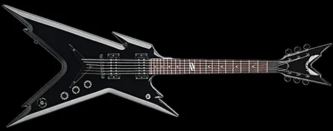

Мое любимое хобби - игра на гитаре!

Всем привет! Меня зовут Тимур, и мое хобби - играть на гитаре. Здесь, на картинке вы можете увидеть Dean Razorback - одна из 4х моих любимиц, которые я иногда (к сожалению, все редже и реже) беру в руки. Это мое увлечение с детства, несбыточная мечта, играть в рок-группе. Конечно, детство кончилось, мечты куда-то ушли... А желание играть все еще остается =)